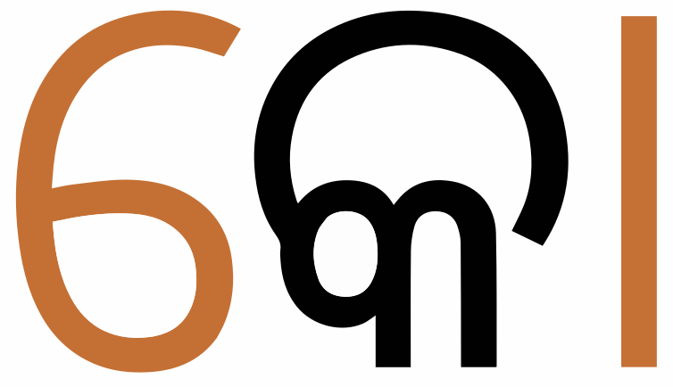

| abjad; consonant alphabet |
辅音音素文字 |
表示辅音而不表示短元音的书写系统。英语的abjad一词源于阿拉伯字母的前四个字母：alef、beh、jeem和dal（另见Unicode的定义）。其他类型的书写系统包括元音附标文字、全音素文字和音节文字。
|
| abugida; alphasyllabary |
元音附标文字 |
辅音字母本身即有元音，其他元音则通过将辅音与一个或多个附加符号组合表示的书写系统。（另见Unicode的定义。）其他类型的书写系统包括辅音音素文字、全音素文字和音节文字。
|
| alphabet |
全音素文字 |
既标出辅音，也标出元音的书写系统。英语的alphabet一词源于希腊字母的前两个字母：alpha和beta。（另见Unicode的定义。）其他类型的书写系统包括辅音音素文字、元音附标文字和音节文字。
|
| application internal identifiers |
应用内部标识符 |
|
| ASCII case-insensitive matching |
ASCII大小写不敏感匹配 |
|
| aspiration |
送气 |
|
| base direction |
基方向 |
|
| baseline |
基线 |
|
| Basic Multilingual Plane (BMP) |
基本多文种平面（BMP） |
|
| bidirectional text |
双向文本 |
|
| bilabial |
双唇音 |
|
| block (Unicode) |
区块，块（Unicode） |
|
| bound morpheme |
粘着词素 |
|
| calligraphy |
书法 |
|
| chandrabindu, candrabindu |
仰月点 |
|
| circumgraph |
环绕符号 |
在辅音的多个方向都有字形的单个元音码位。例如，在奥里亚文的音节  /ka/ 中，字符 ୋU+0B4B ORIYA VOWEL SIGN O 在辅音的两侧都有字形。 |
| click consonant |
搭嘴音 |
|
| closed syllable |
闭音节 |
|
| coda (syllable) |
音节尾 |
|
| code page |
代码页 |
|
| code point |
码位 |
码位表示字符在字符集中的位置。例如，Unicode字符集中字母á的码位十进制为225，十六进制为0xE1。我们通常使用十六进制数来表示码位。
|
| combining character |
组合字符 |
|
| Common Locale Data Repository |
公共区域设置数据存储库 |
|
| consonant |
辅音 |
|
| consonant cluster |
辅音丛 |
连续出现的不夹杂元音的多个辅音（如英语单词splits的词首和词尾各有一个辅音丛）。 |
| cursive |
连写 |
字母通常在基线连接的文字（有些文字并非全部字母可在词内连写在一起）。字体通常需要支持字母的各种内文形式。连写文字包括阿德拉姆字母、阿拉伯字母、哈乃斐罗兴亚文字、蒙文、西非书面字母和叙利亚字母。其他一些文字的字母也可以连在一起，但它们通常不被称为「连写文字」，如天城文、孟加拉文和古木基文等。 |
| daylight saving time |
夏时制，夏令时 |
|
| Devanagari conjuncts |
天城文合字 |
|
| diacritic, diacritical mark |
附加符号，音符 |
|
| Dīwānī |
公文体 |
|
| Eastern Arabic numerals |
阿拉伯文数字 |
|
| Egyptologist |
埃及古物学者 |
|
| escape |
转义 |
|
| European numerals |
阿拉伯数字 |
|
| featural syllabary |
特征音节文字 |
|
|
font |
字型 |
|
| free morpheme |
自由词素 |
|
| glide |
滑音 |
|
| glottis |
声门 |
|
|
glyph |
字形 |
|
| grammatology |
文字学 |
|
| grapheme cluster |
不翻译，或译为「字位丛」 |
|
|
hyphenation |
断词连字 |
|
| ijam |
不翻译 |
|
| inherent vowel |
默认元音 |
|
| International Phonetic Alphabet (IPA) |
国际音标 |
|
| internationalized domain name (IDN) |
国际化域名 |
|
| kerning |
字偶间距 |
|
| koiné language |
共通语 |
|
| Kūfī |
库法体 |
|
| larynx |
喉 |
|
| lexical item |
词项 |
|
| ligature |
连字 |
|
| locale |
区域设置 |
|
| manner of articulation |
调音方法，发音方法 |
|
| morpheme |
词素，语素 |
|
| Muḥaqqaq |
学者体 |
|
| murmured |
气声 |
|
| nasalization, nasalisation |
鼻音化 |
|
| Naskh |
誊抄体 |
|
| Nasta‘līq |
波斯体 |
|
| normalization |
正常化 |
|
| nucleus (syllable) |
音节核 |
一般来说，每个音节都要有一个音节核。最简单的音节仅由音节核构成，例如英语单词“eye”。音节核通常是元音，不过有时也可能是成音节辅音（syllabic consonant）。另参见音节结构。 |
| onset (syllable) |
音节首 |
由辅音充当。在部分语言中是必有成分，而在另一些语言中则是可能出现甚至不得出现的成分。另参见音节结构。 |
| open syllable |
开音节 |
|
| orthographic syllable |
正写法音节 |
Unicode标准中没有对这个术语进行明确定义。我们在这里将其定义为包括多于一个grapheme cluster的排版单位。 |
| orthography |
正写法 |
|
| phonetics |
语音学 |
|
| phonology |
音系学 |
|
| place of articulation |
调音部位，调音位置，发音部位，发音位置 |
|
| plane (Unicode) |
平面（Unicode） |
|
| plosive; stop |
爆破音 |
|
| precomposed |
预组合 |
|
| register |
（适合特定场合使用的）语体风格，语域 |
|
| retroflex consonant |
卷舌音 |
|
| rhyme (syllable) |
韵基 |
|
| root |
词根 |
|
| specific language impairment (SLI) |
专门性语言障碍（SLI） |
|
| syllabary |
音节文字 |
一种书写系统，其中每个字符对应一个辅音和一个元音，或在某些情况下对应多个辅音和元音。这类书写系统中通常还有字符用来表示独立的元音。其他类型的书写系统包括辅音音素文字、元音附标文字和全音素文字。
|
| syllable structure |
音节结构 |
一个音节从结构上一般包括音节首和韵基。韵基包括音节核和音节尾。音节核是必有成分，而音节首和音节尾可以不出现。
|
|
text spacing |
文本的间距调整 |
|
| Unicode Consortium |
统一码联盟 |
|
| Unicode control character |
Unicode控制字符 |
|
| Universal Character Set; Unicode |
Unicode，统一码 |
|
| unvoiced |
清音 |
|
| UTF-16 |
UTF-16 |
一种多字节编码，用2个或4个字节表示每个Unicode字符。UTF-16不向后兼容ASCII，不过是许多编程语言（如Java、C#和JavaScript）和操作系统中Unicode的内部编码形式。 |
| UTF-8 |
UTF-8 |
一种多字节编码，1到4个字节表示每个Unicode字符，并且向后兼容ASCII。UTF-8是网页中表示Unicode的主要编码。 |
| variation selector |
变体选择符 |
|
| virama |
怛达点画 |
|
| vocal folds |
声带 |
|
| voiced |
浊音 |
|
| vowel |
元音 |
|
| vowel sign |
元音符号 |
表示一个元音的一个字形或多个字形的组合。元音符号通常在婆罗米系文字中出现，用来替代默认元音。元音符号有时有多个部分，这些部分可能显示在辅音字母的不同方位（上下左右都有可能）。元音符号通常是组合字符，但有时也可能是组合字符和独立字母的组合（比如泰文和老挝文），或者只有独立的字母（如新傣仂文）。 |
| zero-width joiner (ZWJ) |
零宽连字 |
|
| zero-width non-joiner (ZWNJ) |
零宽不连字 |
|